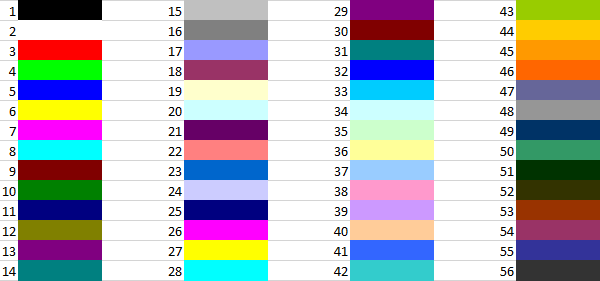

VBA Excel. Цвет текста в ячейке
Автор Время не ждётОпубликовано 23.10.2017
Изменение цвета текста (шрифта) в ячейке рабочего листа Excel с помощью кода VBA. Свойства .Font.Color, .Font.ColorIndex и .Font.TintAndShade
Использование цветовой палитры для присвоения цвета тексту в ячейке листа Excel аналогично присвоению цвета фону ячейки, только свойство диапазона .Interior меняем на свойство .Font.
Цвет текста и предопределенные константы
Цвет шрифту в ячейке можно присвоить с помощью предопределенных констант:
|
1 2 3 |
Range("A1:C3").Font.Color = vbGreen Range(Cells(4, 1), Cells(6, 3)).Font.Color = vbBlue Cells(7, 1).Font.Color = vbRed |
Напомню, что вместо индексов строк и столбцов можно использовать переменные. Список предопределенных констант смотрите здесь.
Цвет шрифта и модель RGB
Для изменения цвета текста в ячейке можно использовать цветовую модель RGB:
|
1 2 |
Range("A1").Font.Color = RGB(200, 150, 250) Cells(2, 1).Font.Color = RGB(200, 150, 100) |
Аргументы функции RGB могут принимать значения от 0 до 255. Если все аргументы равны 0, цвет - черный, если все аргументы равны 255, цвет - белый. Функция RGB преобразует числовые значения основных цветов (красного, зеленого и синего) в индекс основной палитры.
Свойство .Font.ColorIndex
Свойство .Font.ColorIndex может принимать значения от 1 до 56. Это стандартная ограниченная палитра, которая существовала до Excel 2007 и используется до сих пор. Посмотрите примеры:
|
1 2 |
Range("A1:D6").Font.ColorIndex = 5 Cells(1, 6).Font.ColorIndex = 12 |
Таблица соответствия значений ограниченной палитры цвету:
Открывается в новом окнеСтандартная палитра Excel из 56 цветов
Основная палитра
Основная палитра, начиная c Excel 2007, состоит из 16777216 цветов. Свойство .Font.Color может принимать значения от 0 до 16777215, причем 0 соответствует черному цвету, а 16777215 - белому.
|
1 2 3 |
Cells(1, 1).Font.Color = 0 Cells(2, 1).Font.Color = 6777215 Cells(3, 1).Font.Color = 4569325 |
Отрицательные значения свойства .Font.Color
При записи в Excel макрорекордером макроса с присвоением шрифту цвета используются отрицательные значения свойства .Font.Color, которые могут быть в пределах от -16777215 до -1. Отрицательные значения соответствуют по цвету положительному значению, равному сумме наибольшего индекса основной палитры и данного отрицательного значения. Например, отрицательное значение -8257985 соответствует положительному значению 8519230, являющегося результатом выражения 16777215 + (-8257985). Цвета текста двух ячеек из следующего кода будут одинаковы:
|
1 2 |
Cells(1, 1).Font.Color = -8257985 Cells(2, 1).Font.Color = 8519230 |
Свойство .Font.TintAndShade
Еще при записи макроса с присвоением шрифту цвета макрорекордером добавляется свойство .Font.TintAndShade, которое осветляет или затемняет цвет и принимает следующие значения:
При тестировании этого свойства в Excel 2016, сравнивая затемненные и осветленные цвета, разницы не заметил. Сравните сами:
|
1 2 3 4 |
Range(Cells(1, 1), Cells(3, 1)).Font.Color = 37985 Cells(1, 1).Font.TintAndShade = -1 Cells(2, 1).Font.TintAndShade = 0 Cells(3, 1).Font.TintAndShade = 1 |
При тестировании в первых трех ячейках первого столбца должен быть одинаковый текст для удобства сравнения оттенков.
Опубликовано 23.10.2017Автор Время не ждётРубрики VBA Excel
{kind=link}